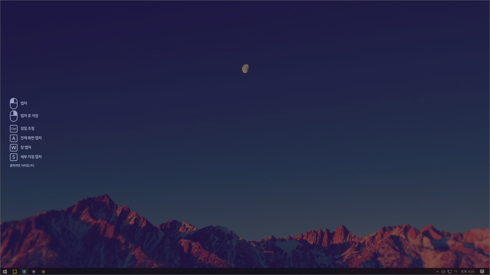
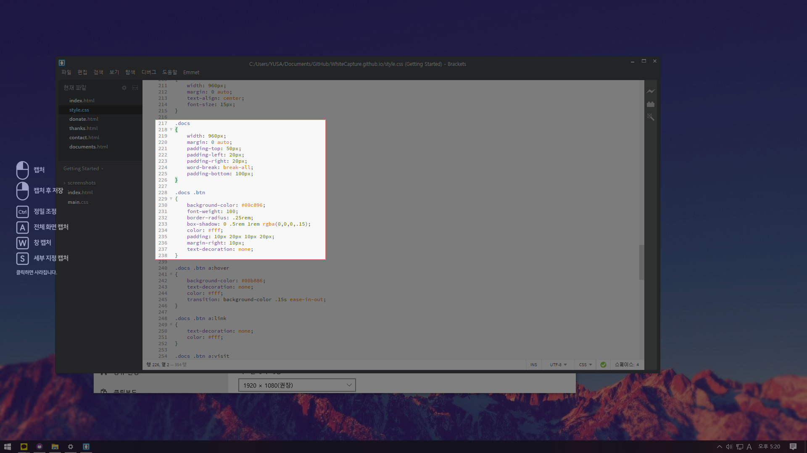
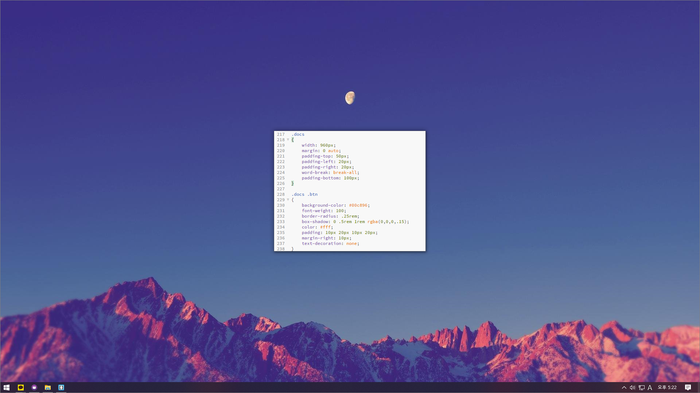
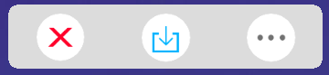
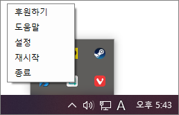
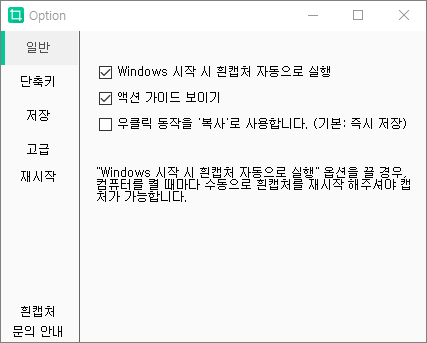

흰캡처 알아가기
흰캡처를 사용해주셔서 감사합니다! 본 도움말은 흰캡처를 이용한 캡처 방법과, 간단한 설정법에 관한 내용을 다룹니다.
캡처하기
흰캡처는 메인 화면이 존재하지 않으며, 컴퓨터를 사용하는 동안엔 항상 켜져있습니다. 그렇기 때문에, 흰캡처는 단축키로 캡처를 하는 방식을 채택하고 있습니다.
흰캡처의 캡처 단축키는 [Ctrl] + [F1]입니다.
캡처 단축키를 누르면, 위와 같이 화면이 어두워지며 캡처가 가능한 상태로 바뀝니다. 이 화면을 캡처모드라고 합니다.
캡처 모드에서 캡처하고자 하는 영역을 마우스로 드래그하여, 해당 부분을 캡처할 수 있습니다.
추가 캡처 방식
흰캡처는 마우스 드래그를 이용한 캡처 뿐만 아니라, 추가로 3가지의 캡처 방식을 지원합니다.
1. 전체 화면 캡처
캡처 모드에서 [A]키를 눌러서 실행됩니다. 모니터 전체를 한번에 캡처하며, 설정된 경로에 즉시 저장됩니다.
2. 창 캡처
캡처 모드에서 [W]키를 눌러서 실행됩니다. 열려있는 창을 선택하여, 해당 창만 캡처가 되도록합니다. 창과 별개로, 해당 창이 가지고 있는 개별 요소 하나까지도 따로 지정할 수 있습니다.
3. 세부 지정 캡처
캡처 모드에서 [D]키를 눌러서 실행됩니다. 별도의 창틀로 캡처 영역을 지정하여, 일정한 영역을 정확하게 캡처할 수 있도록 합니다. 같은 공간을 반복하여 캡처할 때 좋습니다.
4.스크롤 캡처 (v3.5+)
캡처 모드에서 [S]키를 눌러서 실행됩니다. 스크롤 캡처를 실행한 후, 웹 사이트를 클릭하면 웹 페이지가 자동으로 스크롤되며 처음부터 끝까지 길게 캡처됩니다. 웹 페이지의 내용을 저장할 때 좋습니다.
또한, 캡처 모드에서 [좌클릭 드래그]로 캡처 영역을 지정하면 일반적인 캡처를 하지만, [우클릭 드래그]로 캡처 영역을 지정하면 캡처 후 설정한 경로에 즉시 저장되거나, 파일로 저장하지 않고 클립보드에 복사만 할 수 있습니다.
마지막으로, 캡처 모드에서 [Ctrl]키를 누르며 마우스 이동을 하면 "정밀 조정"이 가능합니다. 키를 누르는 동안 마우스 감도가 최저 상태로 떨어져, 더욱 정밀한 영역 지정을 가능하게 합니다.
플로팅
흰캡처는 다른 캡처 프로그램은 대부분 지원하지 않는 "플로팅" 기능을 지원합니다. 이는 첫 버전부터 있던 흰캡처의 정체성이며, 제일 장점으로 꼽히는 기능입니다.
일부 캡처 방식을 제외하고, 캡처를 하는 즉시 캡처된 영역이 화면에 고정되게 됩니다.
 위 두 장의 사진은 흰캡처의 플로팅을 보여주고 있습니다. 캡처가 된 영역은 그대로 복사되어 위 사진과 같이 화면에 고정됩니다. 이를 '플로팅'이라고 합니다. 플로팅 된 이미지는 다른 창보다 위에 있게 되어서, 자유롭게 움직이거나 삭제, 혹은 저장할 수 있습니다.
특히 이 '플로팅' 기능 때문에 흰캡처를 '오버레이 도구'로 사용하는 분들도 계실 정도로, 흰캡처에서 빠질 수 없는 기능이 되었습니다.
퀵 바
플로팅 사진을 클릭하고 있는 동안엔 아래와 같은 '퀵 바'가 나타납니다.
플로팅 사진을 퀵 바의 아이콘으로 끌어 놓아서 캡처된 이미지를 삭제하거나, 저장할 수 있습니다. 이런 퀵 바는 플로팅 된 사진을 제어할 수 있는 아주 중요한 기능을 담당합니다.
퀵 바의 세 아이콘은 각각 삭제, 저장, 다른 이름으로 저장을 뜻합니다.
최근 캡처한 사진 열기
최근 캡처한 사진을 다시 플로팅 할 수도 있습니다. 이는 흰캡처의 플로팅 기능을 더욱 잘 사용할 수 있도록 해줍니다.
Ctrl + F2 키를 눌러보세요. 가장 최근 캡처한 사진이 화면 중앙에 플로팅됩니다.
설정하기
실행화면이 별도로 동작하지 않는 흰캡처는 "트레이 아이콘"을 우클릭하여 설정 화면에 진입할 수 있습니다.
[설정]을 눌러서 흰캡처의 설정을 열어보세요.
설정 화면의 각 탭(일반, 단축키, 저장, 고급)을 이용하여 흰캡처를 입맛에 맞게 설정할 수 있습니다.
1. 일반
흰캡처 전체에 영향을 미치는 설정을 할 수 있습니다.
2. 단축키
흰캡처의 대표적인 두 단축키 "캡처하기"와 "최근 캡처한 사진 열기"를 설정할 수 있습니다.
3. 저장
캡처한 사진을 저장할 때의 설정입니다.
'고급' 탭은 프로그램에 버그가 있을 시 자가 진단을 위해 있는 기능입니다. 버그 발생 후 문의 시, 제가 해당 옵션을 조정해달라고 요청드립니다.
흰캡처 가이드는 여기까지입니다. 기타 사용에 대한 문의가 있을 시, '자주 묻는 질문' 링크를 참고해주시거나 문의를 넣어주세요.
읽어주셔서 감사합니다.
자주 묻는 질문 문의하기